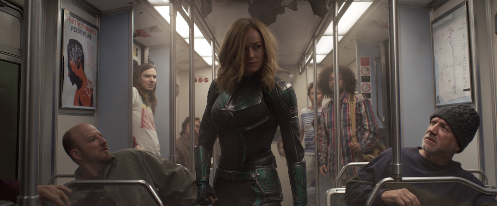

CAPTAIN MARVEL
Release date: 17 Jan 2020 (United States)
Directors: Adil El Arbi · Bilall Fallah
DVD release date: 31 Mar 2020
Summary: 2hr 4min ·Crime/Thriller
Languages: English - Spanish
Costume designer: Dayna Pink
SUMMARY
It’s finally here: the first film in the Marvel Cinematic Universe with a female superhero at its center and a woman serving as a co-director and writer. These are unprecedented, exciting and long overdue achievements all around within a pop-culture powerhouse that’s long been dominated by male stories and storytellers. So why does “Captain Marvel” feel like a bit of a disappointment? It’s fine and often quite funny. It fits securely within the MCU but also functions sufficiently as a stand-alone entity. But the character, and the tremendous actress playing her in Oscar-winner Brie Larson, deserved more than fine. They—and the girls and women everywhere looking to “Captain Marvel” with wide eyes and high hopes for seeing themselves on screen—deserved a game-changer along the lines of “Black Panther” or even “Guardians of the Galaxy” or “Doctor Strange.” “Captain Marvel” mostly takes place in the mid-1990s, and feels like it was made then, too, in terms of its technical prowess and emotional depth. This is not a compliment. As for the former, perhaps that was intentional—yet another example of wallowing in period nostalgia alongside the grunge chic and girl-power anthems. The prolonged intro in space and the big action sequences have a cheesy, retro feel to them that can be amusing but also inscrutable. But co-directors Anna Boden and Ryan Fleck have made their names writing and directing indie dramas featuring richly drawn characters facing real stakes. “Half Nelson” (2006), about a drug-addicted middle school teacher, is the movie that put Ryan Gosling on the map and earned him his first Oscar nomination. “Sugar” (2008) is one of the most intimate and insightful movies ever made about baseball. You’d rightly expect that their depiction of the title character—real name Carol Danvers—would be complex, compelling and abidingly human, despite her otherworldly superpowers. But while Larson is tough, plucky and skilled with a well-timed quip, her chief character trait seems to be rebelliousness. That’s a little limiting. (Boden and Fleck co-wrote the script with Geneva Robertson-Dworet, and all three share story-by credit with Nicole Perlman and Meg LeFauve.) Additionally, she has forgotten who she really is, so her interior life is as much of a blank to her as it is to us. Despite her fighting spirit, Carol often finds herself as a pawn trapped between various worlds where she feels as if she doesn’t belong. At the film’s start, she’s living and training as a warrior on the Kree planet of Hala. Her mentor, Jude Law’s Yon-Rogg, is constantly reminding her not to let her emotions get the best of her—a pointed commentary on the sexist notion that women are too emotional to handle tough jobs. And “Captain Marvel” is full of such less-than-subtle messaging. But after the shapeshifting enemy Skrulls, led by the swaggering Talos (Ben Mendelsohn), take her prisoner during a battle, she escapes and lands on a different planet: our own. Specifically, she finds herself a fish out of water within the urban sprawl of Los Angeles. It’s here that “Captain Marvel” leans hard on the humorous kitsch of its decade-specific detail: Blockbuster Video! Two-way pagers! Dial-up Internet! We were so lame. It’s the cinema of empty recognition—a ‘90s version of the way “Ready Player One” relies heavily on ‘80s pop culture to provoke a warm, knowing response. “Hey, Captain Marvel ties her plaid flannel button-down around her waist the way I used to in college! Cool.” These moments and images are good for a chuckle and not much more. But as Carol begins to piece together her history as an Air Force test pilot, “Captain Marvel” begins to feel like a female version of “Top Gun.” This actually is a compliment; the sections on Earth in which Carol grasps at her memories of the past and discovers her strength and bravery in the present (and in the cockpit) are the film’s highlights. The always formidable Annette Bening is a tantalizingly fleeting presence as a mysterious mentor figure in Carol’s previous life. And Lashana Lynch helps flesh out Carol’s personality as her best friend: a fellow pilot who similarly never got the shot she deserved because she was a woman and a young moCarol’s most rewarding and consistently entertaining relationship, though, is with young S.H.I.E.L.D. agent Nick Fury, played by a magically de-aged Samuel L. Jackson in a bit of visual effects wizardry. Truly, the result is seamless. You will forget that you are looking at a 70-year-old man. (Clark Gregg, reprising his revered role as Agent Coulson, isn’t quite so believable, but it’s always good to see him.) Larson and Jackson play off each other beautifully, trading snappy banter and affectionate zingers with ease. Their mission is to find a glowy space cube thingy—you know what it is and why it matters if you’ve been following these movies—and keep it out of the wrong hands, but that’s the least intriguing component of “Captain Marvel.” But her camaraderie with Jackson—and later with a quick-witted Mendelsohn and a fantastically scene-stealing orange kitty named Goose—ultimately serves as a reminder of just how little there is to Larson’s character. Not unlike Captain America’s role within the Avengers, Captain Marvel functions here as the straight woman, the steady anchor in a sea of big, swirling personalities. Sure, she eventually comes into her powers in full and is literally the kind of girl on fire that Alicia Keys sings about. But if we’re not invested in who she is at her core, how are we supposed to care about what she’s burning down? Speaking of music, the folks behind “Captain Marvel” spared no expense on the film’s soundtrack, including songs from such female-driven '90s acts as TLC, Garbage, Elastica, Salt-n-Pepa and a painfully on-the-nose use of No Doubt’s “Just a Girl” during a particularly elaborate fight scene. The girl power (and grrl power) ring out loud and clear, if a bit hollow.